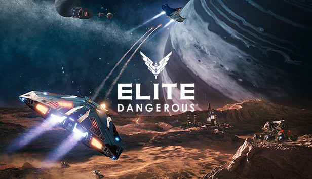

| Dying Light 2 Stay Human is an action role-playing survival horror video game, featuring a zombie apocalyptic-themed open world. Set 22 years after the first Dying Light, it stars a new protagonist named Aiden Caldwell, who is equipped with various parkour skills. Game would be more fun if the game didn't have loads of bugs, still kinda fun tho. Parkouring and running on the roofs and killing zombies is fun. |
| Deep Rock Galactic is a clever concoction of moreish gaming staples that makes you wonder why it hasn't been done before. Each co-op excursion is some combination of shooting down waves of enemies and mining or searching for resources, and it's a thoroughly enjoyable, highly replayable experience. You can play as 4 diffrent type of dwarves with their own abilities and way to play them. Really fun to play with friends. |
|  | Elite Dangerous is a space flight simulation game developed and published by Frontier Developments. The player takes the role of a pilot of a spaceship, and explores a realistic 1:1 scale open-world representation of the Milky Way galaxy, with the gameplay being open-ended. It's a really fun game with loads of difrent types of ships. small, medium and large ships. You can use them for combat, trading or exploration. |
 | Explore a thrilling, open-world MMO filled with danger and opportunity where you'll forge a new destiny for yourself as an adventurer shipwrecked on the supernatural island of Aeternum. Endless opportunities to fight, forage, and forge await you among the island's wilderness and ruins. It is a PVP focused game but has great PvE aswell, but not much end game content at the moment. |
 >
>